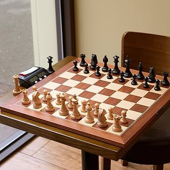
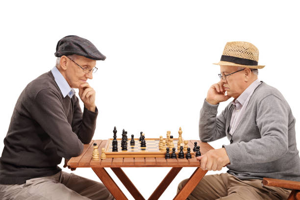
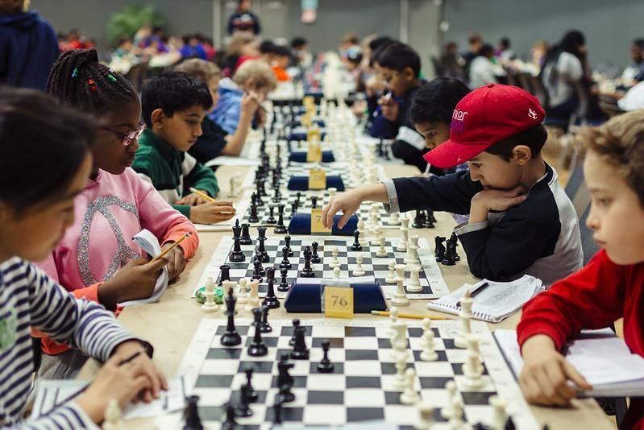
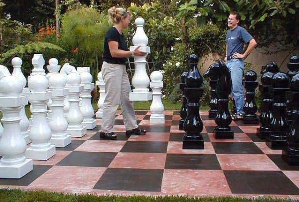
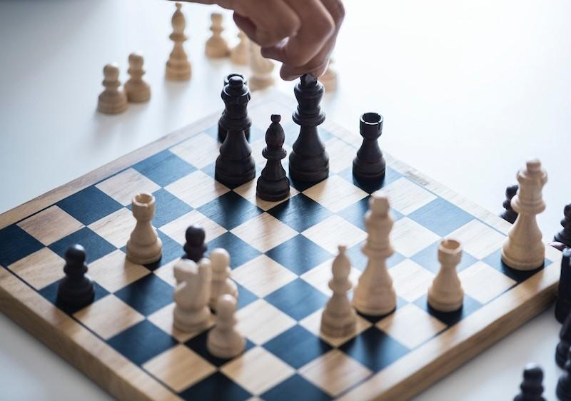
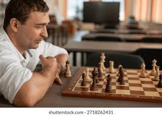

What is Chess?
Chess is a strategic board game played between two players on a board with 64 squares. Each player begins with sixteen pieces including pawns, rooks, bishops, knights, a queen, and a king.
Each piece moves differently. Pawns move forward, rooks move horizontally or vertically, bishops move diagonally, knights move in an L shape, the queen moves in any direction, and the king moves one square at a time.
The objective of the game is to checkmate the opponent’s king.

Who Plays Chess?
Chess is played by people of all ages around the world.
Professional players compete in tournaments organized by FIDE, the international chess federation.
Students and hobby players also enjoy chess for its strategic and intellectual challenges.

When is Chess Played?
Chess can be played anytime since it is an indoor game.
Many schools and universities host chess clubs and competitions during the academic year.
Professional tournaments take place throughout the year around the world.

Where is Chess Played?
Chess is played in homes, schools, parks, and chess clubs.
Public parks often have large outdoor chess boards where people can play casually.
Online chess platforms also allow people from around the world to compete.

How to Play Chess
The game starts with both players having sixteen pieces arranged in a specific starting position.
Players take turns moving one piece at a time while planning strategies and tactics.
Common tactics include forks, pins, skewers, and discovered attacks.

Why I Enjoy Chess
I enjoy chess because it challenges my thinking and strategic planning.
The game requires patience, concentration, and problem solving.
Playing chess with friends or online opponents is both relaxing and competitive.
